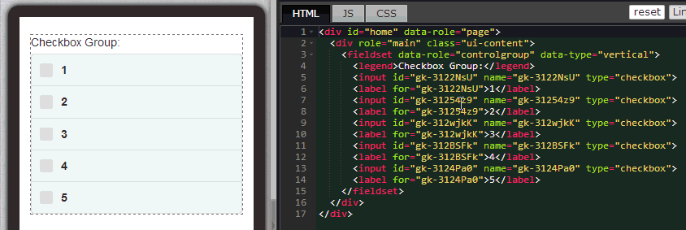

除了上一节介绍的下拉选单，CheckBox 也是网页窗体与 App 窗体中相当常见的功能，以往我们使用 CSS ，面对这类型的窗体元素都很难修改样式，而且不同浏览器上显示的样式甚至不尽相同真是令人相当的头疼。
但是现在有了 EZoApp 之后，大家就可以利用 EZoApp 的拖拉方式，快速的建立 CheckBox，只需要用鼠标点选，就能够进行水平和垂直方式的排列，而且样式也采用 jQuery Mobile 的标准样式，也是在行动装置上常见的样式，省去了许多不必要的麻烦工作。
如果大家不满足于基本的黑白两种样式，可以自己尝试看看使用 HTML 或 CSS 来进行编辑，可以参考前几篇「制作特色按钮」、「使用 Google Fonts」，都有一些不错的教学介绍喔！
范例链接：
基本组件实作 - 设计 CheckBox ( 垂直 )
基本组件实作 - 设计 CheckBox ( 水平 )

一如往常，使用 EZoApp 就是要使用它好用的组件，直接利用拖拉的方式，将 controlgroup-checkbox的组件拖曳到编辑区域，就会自动产生一个 CheckBox 组件。

接下来我们利用之前介绍过的方法，点选 CheckBox 的选项，按下右上方的绿色加号，就会自动新增选项了。

如果我们要改变垂直或水平的方向该怎做呢？只要打开属性面板，直接做方向的修改就可以啰！

一直到这一个步骤之前都相当容易，基本上都只需要动动鼠标就可以解决，而这个步骤我们就是要直接修改样式，让 CheckBox 看起来更为美观。修改的方式就是修改标题 legend卷标的样式，大家可以贴上下列红色的的程序代码，就可以看到样式的变化。
<legend style="-webkit-border-radius:10px 10px 0 0; background:-webkit-linear-gradient(#99f,#33a); text-shadow:none; color:#fff; width:279px; height:30px; padding-top:7px; padding-left:10px; margin-bottom:-6px;">Checkbox Group</legend>
使用了 EZoApp 之后，是不是觉得在设计画面上变得相当的直觉容易呢！这就是 EZoApp 最好用的特色之一喔！
范例链接：
基本组件实作 - 设计 CheckBox (垂直)
基本组件实作 - 设计 CheckBox (水平)